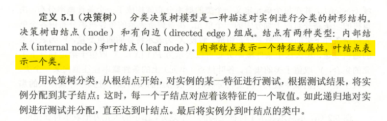
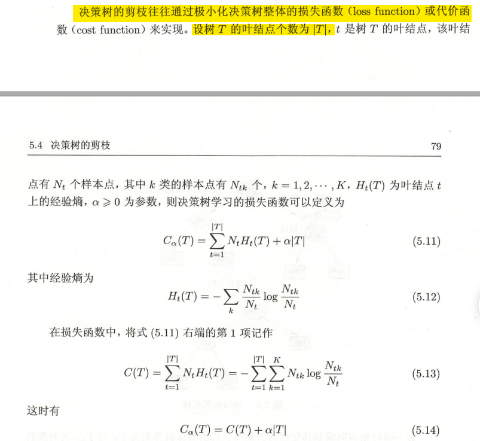
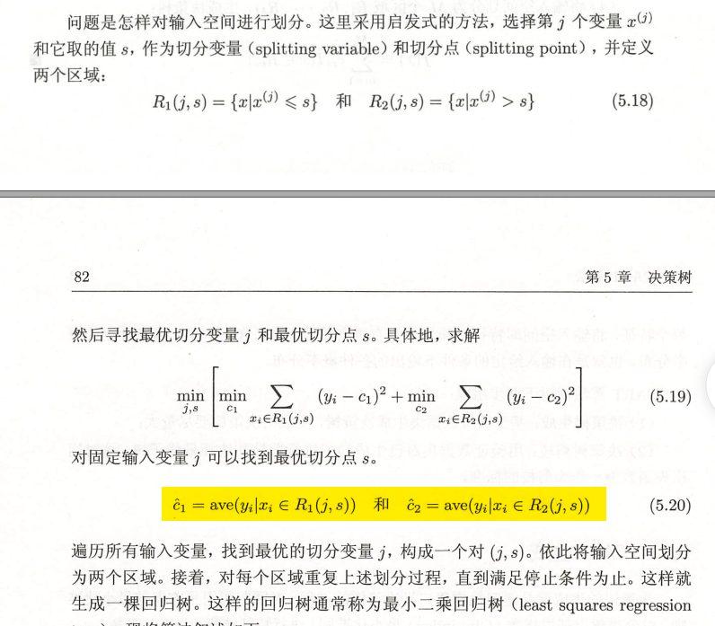
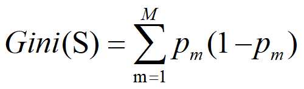
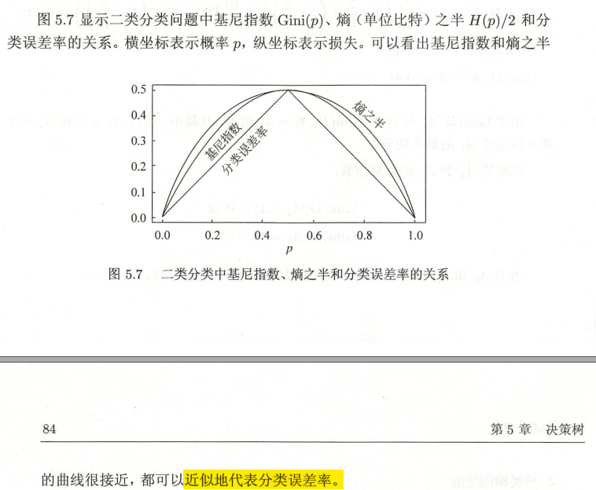
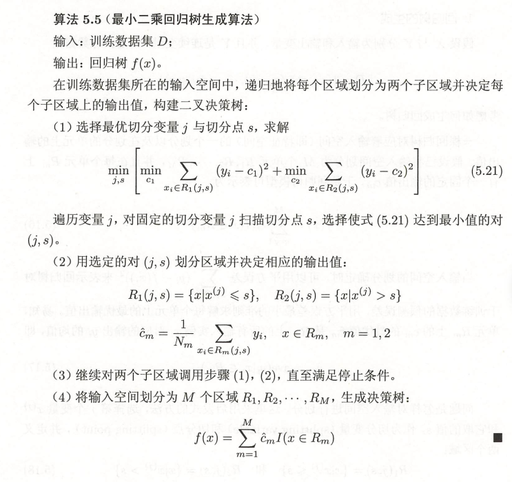
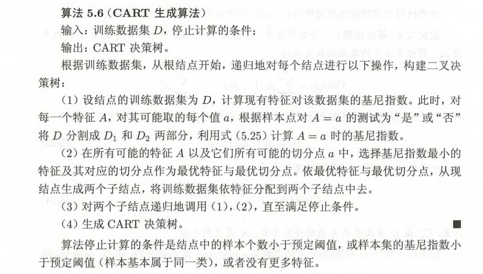
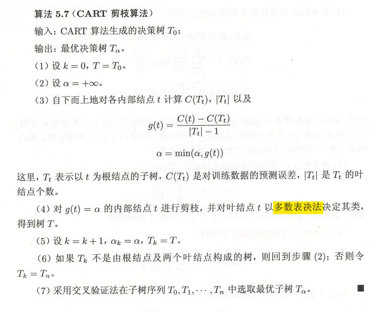
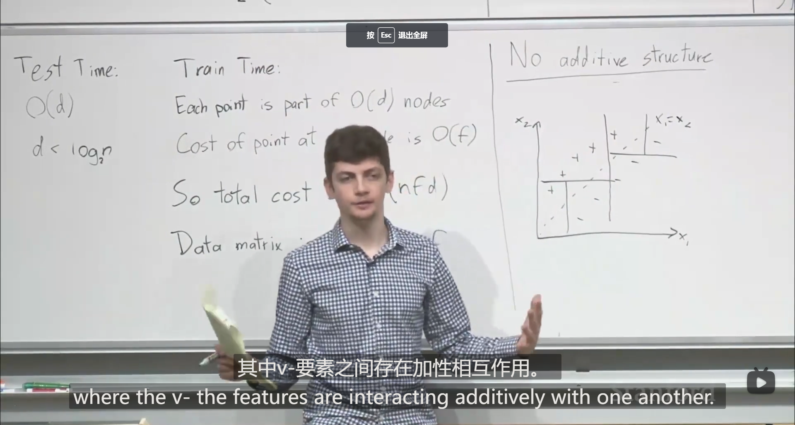

决策树（DT）
人们的决策过程是一个类似“观察因素A的情况，再根据A的情况观察因素B的情况”的形式，从而形成一种树状结构。决策树学习是模仿人类这一结构化决策过程而发展起来的一种有监督机器学习方法。
它可以被认为是if-then规则的集合，也可以被认为是定义在特征空间和类空间上的条件概率分布。
- 模型具有可读性
- 分类速度快
决策树的思想主要来源于Quinlan在1986年提出的ID3和1993提出的C4.5算法，以及由Breiman等人1984年提出的CART算法。
模型

决策树学习本质上是从训练数据集中归纳出一组分类规则或者条件概率模型（在节点处取条件概率最大的进行分类）。决策树问题一般可以分成特征选择、决策树生成、剪枝三部分。
- 特征选择：通过建立一个函数来衡量特征划分的效果
- 生成：递归构造决策树的过程
- 剪枝：递归产生的决策树往往会递归到不能分类为止，这会导致出现过拟合现象，因此需要已经生成的决策树进行剪枝(pruning)，一般是通过极小化决策树整体的损失函数(loss function)或者代价函数(cost function)来实现。
剪枝也可以看成是对模型的正则化（Reaularization of DTs）
- min leaf size
- max depth
- max nodes of the tree
- Min decrease in loss(very tempting)
- pru
不同的决策树算法一般是在特征选择的原则以及剪枝方法上有所区别，下分别介绍不同算法的决策树生成方法。
ID3和C4.5
特征选择
信息熵
借助于热力学中表示分子状态混乱程度的物理量——熵，香农(Shannon)于1948年提出了信息熵的概念，来描述信源的不确定度。描述信源不确定性的函数f应该是信源发出符号的概率p的单减函数，同时考虑到两个或者多个独立符号产生的不确定性应该等各自不确定性之和，即该函数应该具有可加性：
是样本属于$C_m$的概率的估计值。
类似的我们可以定义一个数据的
信息增益
设样本集的任一个样本可以用K维属性$A={A_1,A_2,\dots,A_K}$表示，属性$A_i(i=1,2, …,K)$根据样本取值不同将样本S划分为$V_i$个类，即$V_i$个子集${S_{i1},S_{i2},\dots,S_{iV_i}}$。其中子集$S_{iv}$
(v=1,2, …,Vi)中有$n_{iv}$
(v=1,2, …,Vi)个样本。 子集$S_{iv}$
(v=1,2, …,Vi)中属于类Cm(i=1,2,…,M)的样本个数为$n_{ivm}$$
. 则使用属性$A_i$对样本集S进行一次划分后，整体的信息熵可以看做在特征A已知的情况下类的不确定程度（条件熵）。具体可以表示为：
使用属性Ai对样本S进行划分后，与划分前相比，样本变得有序了，即信息熵下降了。与划分前相比，信息熵下降的数量称为信息增益。使用属性Ai对样本S进行划分后得到的信息增益定义为：
一种比较简单的决策树学习损失函数定义方法是：

这种情况下的损失函数极小化等价于正则化的极大似然估计，所以也相当于利用正则化的极大似然估计进行模型选择。
确定完剪枝损失函数后，剪枝其实看剪枝后书的损失函数值是否会减小，如果减小了，则应该减去对应的节点。（因为只需要考虑修建前后损失函数的差，计算可以在局部进行，因此可以借助动态规划算法实现）
CART算法（classification and regression tree）
CART也由特征选择、决策树生成和剪枝三部分组成，即可以用来分类也可以用来回归。
CART是在给定输入随机变量X条件下输出随机变量Y的条件概率分布的学习方法。
CART假设决策树是二叉树，左分支为节点特征值取“是”的分支，右分支为取值为否的分支。
CART算法在进行特征选择时回归树利用平方误差最小化的原则，对分类树采用基尼指数（Gini Index)最小化准则.
特征选择
回归树
在回归树中，输入空间（特征空间）被分为M个单元$R_1,R_2,\dots,R_M$，每一个单元上分别有一个固定的输出值$c_m$，于是对于一组特定的输入，回归树模型可以表示为：
通过建立$\sum_{x_i\in R_m}(y_i-f(x_i))^2$来表示训练数据的测试误差。因此回归树问题就转化为了如何对特征空间进行划分的问题：
- 切分变量splitting variable（特征值）的选择
- 切分点splitting point（阈值）的选取
- 每一个划分单元输出值（$c_m$）的确定

分类树
与ID3和C4.5不同的是，CART算法借助基尼函数来表示集合的不确定性，基尼指数值越大，样本集合的不确定性越大。


树的生成


剪枝
剪枝分为两个步骤
- 通过适当的剪枝产生一个子树列
- 选取一定的数据集根据基尼系数或者平方差误差进行交叉验证，从子树列找出最优决策树
由于对训练数据集误差的评价函数的特殊性（基尼指数或者平方误差），在CART剪枝过程中我们可以只研究一个节点剪枝前后预测误差的变化情况。对于决策树上任何一个节点t，如果不剪掉该节点，那么以该节点为根节点的损失函数可以写作：
如果减掉该节点，损失函数可以写为（以t节点为单节点）：
经过证明发现，在$\alpha$比较小时：
随着$\alpha$的增大:
也就是说当$\alpha$给定时，只要取:
，减与不减有相同的损失函数值，但是剪了之后泛化能力更强，于是应该减掉该节点。
而且根据Breiman等人的证明，随着$\alpha$的增大，剪枝对应的子树列是不断嵌套的，也就是说我们可以根据计算每一个节点处$g(t)=\frac{C(t)-C(T_t)}{|T_t|-1}$$
的值来得到不同$\alpha$区间内的最优树，该函数其实可以用来衡量剪枝后整体损失函数减少的程度。通过不断剪枝剪到根节点，我们可以得到一系列最优的子树列。
最后，在通过独立的验证数据集,借助平方误差或者基尼指数来评估泛化误差，找到最优的决策树。

优缺点
优点：
- 可解释性强
- 可用来处理分类变量
- Interpcetable：可以任意去除一个子节点或者子树
- Fast
缺点：
- 特征之间存在加性关系时预测效果不太好

- high variance models（容易过拟合
- 预测准确率低